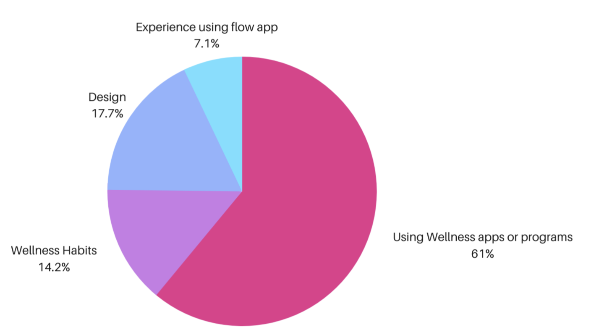
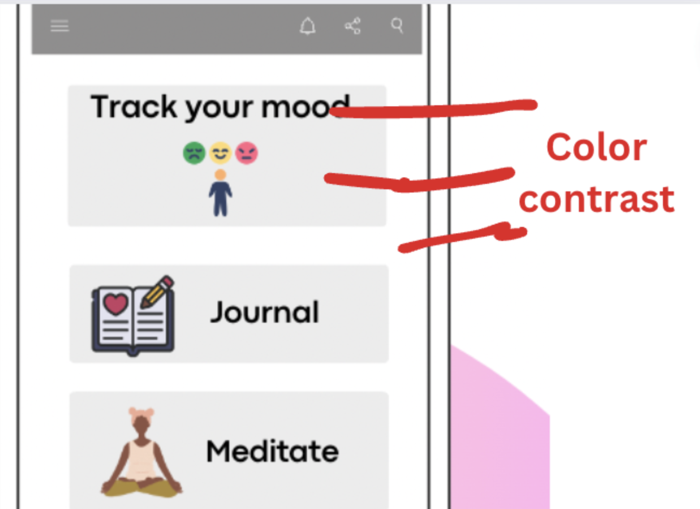
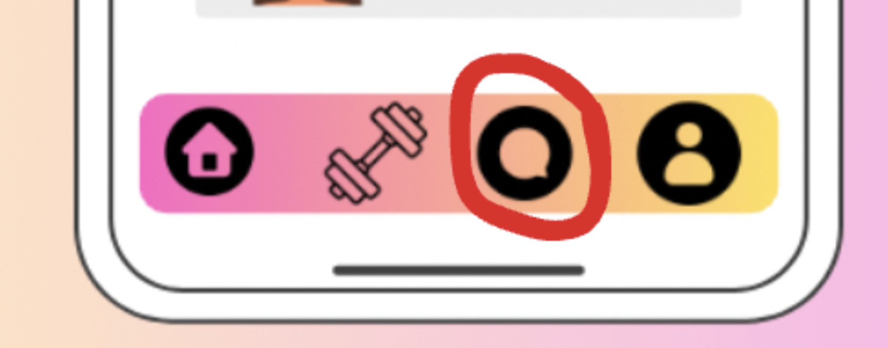

MVP Evaluation for Flow, a Social-Emotional Skills App
Evaluating Flow's MVP before it scales
Flow built a mental health app to help people learn social and emotional skills for coping with life's challenges. They brought me in to evaluate their MVP, learn more about prospective users, find ways to keep learners engaged and motivated, and turn UXR insight into concrete recommendations for improving the app.

Through a study combining surveys, interviews, and usability testing, I gathered insight into what prospective users wanted and where they struggled, which surfaced real usability issues in the current build. I paired that with a competitor analysis across the mental health space to find ways to strengthen engagement and retention, then turned both into design recommendations for the app's performance and user experience.
Understanding the product vision
Flow's own team had already run a small study with beta testers among family and friends, and were working from an early assumption: users are 13–19 years old, both clinical (with a mental health diagnosis) and non-clinical, interested in self-improvement and mental health advocacy. Coming in as a psychologist, I already understood why early prevention — building social and emotional skills — matters for mental health, and how different therapeutic approaches support it. That shaped three objectives for the research, set together with Flow's team.
Evaluate the MVP
How easily are users interacting with the app, and what actions do they actually take? How do they feel about the design and colors?
Learn about users
What competitor apps are our users already using, and why?
Find engagement opportunities
What keeps users interested over time, and what feedback do they have on improvements?
Survey & competitive landscape
Survey
To learn more about beta testers and their experience with Flow, I ran a survey covering how they felt about the app's colors and design, their opinion of its features, how actively they used mental health apps, their wellness habits, and their experience with Flow specifically. Only 7 beta testers responded, and none were willing to sit for an interview — so I also shared the survey with mental-health and self-improvement communities on social media, which brought in 86 responses.

Competitive landscape
61% of respondents were already using a wellness app. Headspace and BetterHelp came up most often as apps used weekly. Asking what people liked and disliked about the apps they already used surfaced clear themes through thematic analysis:
What people liked
- Easy to use and navigate
- Able to track their progress
- Bright colors that felt hopeful and optimistic
What people disliked
- Very basic UI, with no emojis or engaging graphics — made the app feel uninteresting
Since several survey respondents named Headspace and BetterHelp as Flow's main competitors, I focused the desk research there — examining their app-store ratings for retention signals, and reading mental health communities, app-store feedback, and blog coverage to surface pain points and design opportunities.
- Onboarding that sets up a strong first-time experience
- Daily encouragement notifications
- Gamification — streaks and achievement awards
- Encouragement after completing a task
- Community engagement and an in-app feedback option
UX audit, interviews & usability testing
UX design audit
Navigation
Audio courses were tucked inside the "Training" tab, making them hard to find — users said they'd rather listen like a podcast while doing something else than have to read through courses visually.
Usability
Several widgets were unclear — the "chat" icon was actually used for an "upcoming workshop" feature, which led users to expect they could message or join a community there. The app was also reported as a little slow.
Accessibility
The toolbar's color contrast wasn't visually strong and, in several places, didn't meet WCAG guidelines — a real issue for colorblind users and for anyone using the app outdoors in bright light.

Interviews & usability test
I recruited 4 of the survey respondents for in-depth interviews paired with a remote usability test, asking them to explore the MVP as they normally would and think aloud. Motivations varied, but the difficulties were strikingly similar: courses felt too long and lost people's interest, no reward followed course completion, and the font size and styling didn't land well.
What participants liked
- Quizzes
- The meditation feature
- Daily tips
- Audio version of courses
- Digital journaling
Usability issues found
- Quizzes weren't timed
- Terms like "dialectic" and "reinforcing" were used without explanation
- The journal-entry tracker didn't work
- No reference images for confidence poses
- No visible progress on quizzes or courses
- The chat icon was used for "upcoming workshop," which confused users expecting messaging or community

A/B testing
Finally, I ran A/B testing in Figma across the color options Flow had for various screens — none of which yet met Web Content Accessibility Guidelines (WCAG) for contrast.
Recommendations & impact
- Build an in-app feedback system so users can flag problems or expectations directly.
- Use plain vocabulary instead of clinical or advanced terms.
- Add an onboarding video to strengthen the app's value proposition upfront.
- Use widgets with globally understood meanings — starting with the chat/workshop icon.
- Bring color contrast up to WCAG standards throughout.
- Add a community forum — the confusion around the chat icon suggested that's genuinely what people expected to find there.
This research track left Flow a strong legacy: a comprehensive playbook the team could act on. I sketched out the proposed changes myself, and worked directly with design and dev to relay research findings into the prototype quickly — the way agile UXR is supposed to work.